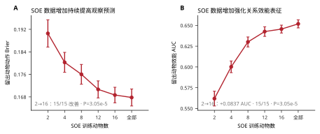
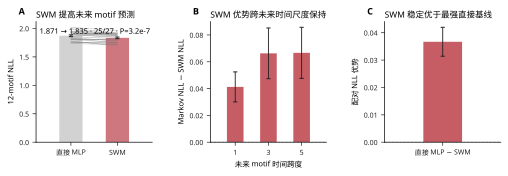
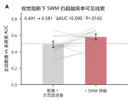

同一真实当前状态
社会世界模型 / 目标导向社会信息采样 / 虚拟小鼠
目标导向社会信息采样的社会世界模型（SWM）
一个数据驱动的预测模型，将真实社会状态、采样选择、未来结果和行为动力学连接起来。下方虚拟小鼠图谱可精确回放用于检验模型的真实事件。
社会朝向—
社会观察概率—
社会距离—
观察鼠 / 示范鼠头朝向—
主示例：最新版 Module 1.4 虚拟小鼠，并配对 frozen-v85 行为空间的精确坐标。
探索行为 motif
行为空间被组织为 12 个 motif。可使用 社会朝向 1/2/4/7 查看不依赖模型阈值的稳定 motif 结构，再切换到 观察模型概率 查看较保守的逐帧 v5 置信度层。每个可点击片段都会显示 社会朝向, 社会观察概率, 鼻尖到鼻尖的 社会距离, 以及 观察鼠 / 示范鼠头朝向, 同时单独保留更严格的已验证 observation-bout 标签。点击任意片段可播放精确的虚拟小鼠视频；点击空白处放置比较圆，拖动平移，滚轮或双指缩放。
留出动物实证 · ANM4 D139
社会世界模型（SWM）
从同一真实当前状态出发，SWM 准确预测记录中的未来，并且这种预测依赖正确的社会信息内容。下方总体留出动物结果证明这一计算跨动物稳定存在。
A SWM 学习一个可预测的关系状态
P(观察)
P(结果)
P(下一 motif)
zt潜在社会状态
at + ot→
zt+1预测状态
at+1 + ot+1→
zt+2预测状态
已观察 xt自身状态 · 示范鼠状态 · 近期动作/结果历史
→
编码器 + GRU由真实序列得到的后验状态
→
5 事件视图由策略头与结果头分解得到。12-motif 状态是未来预测目标，而不是编码器输入。
B 同一当前状态，社会信息决定预测未来
同一真实记录的当前状态ANM4 D139 · 留出动物
正常
全部已观察社会通道
冻结后验 → 准确预测未来
社会信息对照
匹配的错误社会轨迹 / 无社会信息重训
在相同留出动物上显著变差
6 / 8SWM top-1 motif 步骤 · 准确预测未来
0 / 8Markov top-1 motif 步骤 · 几乎无法预测
0.620 → 0.561 / 0.572效能 AUC · 错配社会信息 / 无社会信息重训显著下降
核心证据 · 27 只留出动物
总体留出动物结果验证：SWM 学到的是一个可泛化、依赖正确社会信息的前瞻效能状态，而不是单个案例或简单当前线索。
域内扩展强化前瞻社会效能
域内扩展
0.562 → 0.646
SOE 训练动物从 2 增至 16 只，留出动物效能 AUC 持续提高；15/15 个匹配比较均改善（P=3.05×10−5）。
前瞻观察效能
AUC 0.620
同一潜在状态下的 ΔActive 可预测一次真实观察最终是否转化为主动取食；27/27 动物高于机会水平。
正确社会信息必需
0.620 → 0.561 / 0.572
错配社会轨迹或完全无社会信息重训都会显著削弱效能表征；26/27 动物下降。
核心结果： 数据越多，SWM 对社会效能的表征越清晰；而只有正确的社会内容才能维持这一效能状态。SWM 因而学习的是与未来成功取食直接相关的关系状态。


SWM ↔ SLM 计算桥梁

计算桥梁： SWM 在没有显式写入 SLM 结构的情况下，自发形成与 SLM 对齐的决策坐标，并把这些坐标嵌入更丰富的预测状态空间。
未来行为预测 · 27 只留出动物

学习依赖 · 27 只留出学习者
学习使观察策略逐渐与前瞻社会效能对齐
SWM 给出一个统一的计算解释：ΔActive = P(Active | zt, Observe) − P(Active | zt, Other)。随着训练，动物越来越选择那些社会采样能够提高未来主动取食成功率的状态。
前瞻价值选择
0.006 → 0.014
真实观察与非观察状态的平均 ΔActive 差异。 Late − early = +0.00757; 20/27 increase; P=5.66×10−4.
策略–价值对齐
ρ 0.205 → 0.388
动物内模型 P(观察) 与 ΔActive 的相关。 23/27 increase; Δρ=+0.183; P=3.64×10−5.
观察效能
AUC 0.620
ΔActive 可预测一次真实观察最终是否转为主动取食而非未获奖（AUC 0.620，27/27 动物高于机会水平）；相对“距离 + 示范鼠进食”增加 +0.088 AUC。
社会信息依赖
0.620 → 0.561 / 0.572
按训练日和时长匹配的错误社会轨迹使效能 AUC 降至 0.561 (26/27, P=1.49×10−8); 单独从头训练的无社会信息 SWM 为 0.572 (26/27, P=2.29×10−6).


核心发现
动物并不是在“信息最多”的时候观察，而是在社会信息最可能提高未来取食成功率的时候观察。学习把社会采样逐渐耦合到前瞻效能。
严格计算定义
ΔActive 在观察发生之前、同一潜在状态下计算；expected information gain 也以前瞻方式估计，不使用之后真实出现的社会内容。因此“效能优于信息增益”不是事后信息泄漏造成的。
生物学闭环 · 视觉输入与 VTA 汇聚到观察→主动取食转换

视觉阻断下，SWM 仍超越即时可见线索

支持性描述转移结果
这里只保留用于锚定行为表型的两个转移效应。完整 5×5 转移热图仍保留在源分析中，因为它们增加描述，但没有提供更强机制解释。

点击任意点播放 · 点击/拖动圆圈进行比较 · 在其他位置拖动平移 · 滚轮/双指缩放
已选示例
点击一个点
Motif 字典
每个 motif 都由 frozen v85 行为图谱定义。Social Observation 统计使用逐帧模型推断/概率；更严格的 merged label 单独保留，用于验证代表性视频 bout。